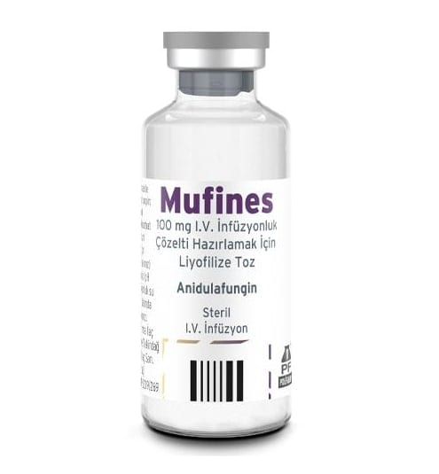

Mufines 100 mg I.V. İnfüzyonluk Çözelti Hazırlamak İçin Liyofilize Toz, 1 Adet

Ne için kullanılır
KT · Bölüm 1MUFİNES 1 flakon içinde 100 mg’lık infüzyon amaçlı çözelti için toz halinde bulunur. İnfüzyon amaçlı çözelti tozu beyazla kirli beyaz arası liyofilize bir katıdır. Sulandırılarak hazırlanan çözelti berrak olmalı, görülebilir parçacık içermemelidir.
Etkin madde anidulafungindir. Anidulafungin ekinokandin adı verilen bir ilaç grubundandır. Bu ilaçlar ciddi mantar enfeksiyonlarının tedavisinde kullanılmaktadır.
Anidulafungin fungal hücre duvarının bir bileşeninin (1,3-β-D-glukan) üretimini engeller. Anidulafungine maruz kalan mantar hücreleri, tamamlanmamış veya kusurlu hücre duvarlarına sahip olur ve üreyemez hale gelirler. Anidulafungin invazif kandidiyazis (kandidemi dahil) olarak Bu ilacı kullanmaya başlamadan önce bu KULLANMA TALİMATINI dikkatlice okuyunuz, çünkü sizin için önemli bilgiler içermektedir. Bu kullanma talimatını saklayınız. Daha sonra tekrar okumaya ihtiyaç duyabilirsiniz. Eğer ilave sorularınız olursa, lütfen doktorunuza veya eczacınıza danışınız. Bu ilaç kişisel olarak sizin için reçete edilmiştir, başkalarına vermeyiniz. Bu ilacın kullanımı sırasında, doktora veya hastaneye gittiğinizde doktorunuza bu ilacı kullandığınızı söyleyiniz. Bu talimatta yazılanlara aynen uyunuz. İlaç hakkında size önerilen dozun dışında yüksek veya düşük doz kullanmayınız.
adlandırılan bir mantar enfeksiyonu türünü tedavi etmek için yetişkin ve 1 ay-18 yaş arasındaki çocuk hastalara verilmektedir. Bu enfeksiyon kanda ve vücudun iç organlarında yerleşir. Enfeksiyona Candida adı verilen mantar hücreleri (maya) neden olur.